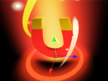

Développement d'un jeu vidéo
Contexte du projet
Qu'est-ce que je devais faire ? Un jeu vidéo. C'est pratiquement la seule consigne que nous avons ee. Non, pour être plus sérieux, le projet consistait en la réalisation d'un jeu vidéo sans thème imposé, sur le moteur que l'on voulait et, en bonus, on pouvait se pencher sur l'accessibilité et le numérique responsable.
-

Image du résultat
SLIME GO est un jeu développé en 3D sous le moteur de jeu Unity et entièrement codé en C#. C’est un jeu de type Endless runner qui consiste à survivre le plus longtemps possible sans mourir. Il vise un public plutôt jeune de par son univers avec des personnages enfantins.
Compétences mobilisées
C#
Génération procédurale
Unity
Optimisation des performances
Développer des interfaces
Travailler en équipe
Créativité
Gestion de projet
Level design
Système de sauvegarde
Adaptabilité
Étapes de développement
Développement du terrain
La construction du terrain, infini, dynamique et visuellement attrayant, fut une étape clé. Pour cela, j'ai opté pour une génération procédurale via des scripts, créant des plateformes en fonction de la position du joueur, plutôt que de le concevoir statiquement dans Unity.
Les Bonus !
Slime Go est un jeu où l'utilisateur doit avancer le plus loin possible. Et pour l'aider, il y a plusieurs bonus :
-

L'aimant permet au joueur de récolter plus de pièces. Il fonctionne en attirant toutes les pièces proches vers le joueur.
-

Le bouclier permet de protéger le joueur du prochain obstacle rencontré.
En parlant d'obstacle...
Comme beaucoup de jeux Endless runner, Slime Go intègre différents obstacles qui viendront empêcher le joueur d'avancer. Ils ont été réalisé en utilisant des boites de collision propre à Unity (des Collider) et des scripts pour les faire bouger, notamment en leur donnant une vitesse et une direction (ajout de vecteurs de force).


Un système de magasin
Le joueur contrôle un slime, personnage enfantin et coloré, dont l'apparence peut être personnalisée grâce à des skins à débloquer via le magasin du jeu. Ce dernier a été développé sur Unity en utilisant des ressources gratuites, et son esthétique s'inspire des jeux cartoon.

Exécution depuis la ligne de commande
J'ai implémenté un système de sauvegarde robuste, permettant aux joueurs de conserver leur progression (skins, pièces). Il repose sur une classe CData (Singleton) pour gérer la sauvegarde, le chargement et le stockage des données. Pour sécuriser les données au-delà des PlayerPrefs Unity, un cryptage a été ajouté.
Un jeu accessible
Le jeu a été pensé pour être accessible à tous avec la possibilité de choisir les touches et d'activer ou non les effets lumineux.
Résultat
Slime Go : Le résultat final est un endless runner fluide et dynamique, rendu possible grâce à une génération
procédurale efficace du terrain. Cette approche nous a permis de créer une expérience de jeu unique à chaque
partie, tout en optimisant les performances pour une jouabilité optimale sur différents appareils.
Nous avons également mis en place des techniques d'optimisation pour le numérique responsable,
réduisant la consommation de ressources sans compromettre la qualité visuelle.
Le résultat final est un jeu fun et addictif, où l'objectif est simple : survivre le plus longtemps possible en évitant les obstacles et en collectant des pièces. Le gameplay est intuitif et accessible, tout en offrant un défi progressif pour maintenir l'intérêt du joueur sur le long terme.
Regard critique
Grâce à ce projet, j'ai découvert le travail de groupe sur le long terme et l’organisation et l'investissement que cela demande. Mes compétences en développement Unity et en C# ont augmenté. Au final, j'ai réussi à remplir mes objectifs sur ce projet. Slime Go est maintenant un jeu fonctionnel et solide.
Si je devais le refaire, je réfléchirais à l'ensemble du jeu dès le début pour éviter de perdre du temps pendant le développement.